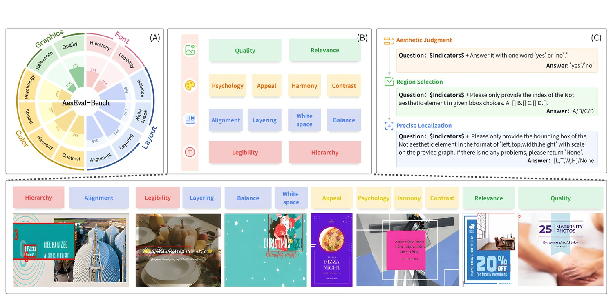
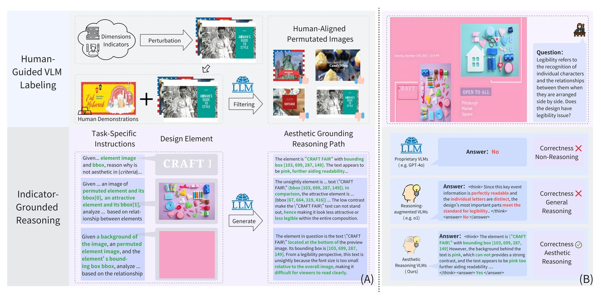
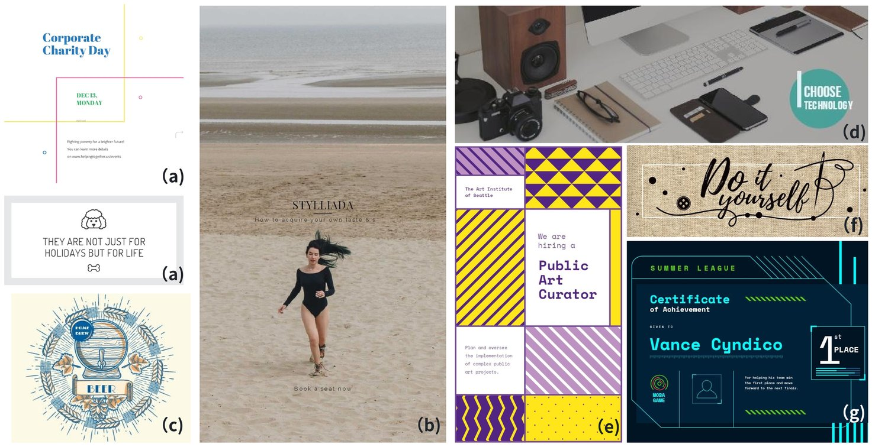
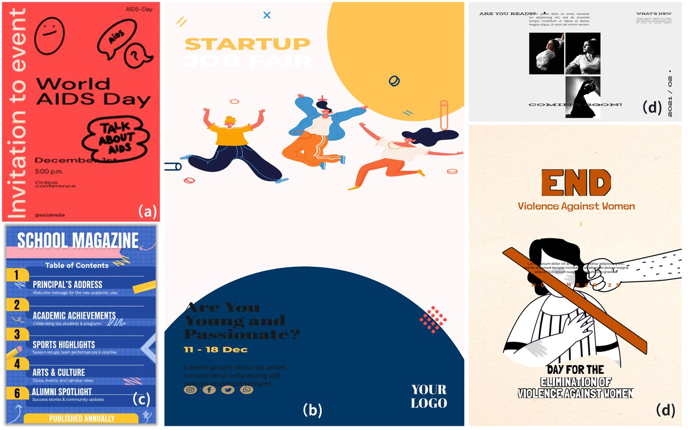
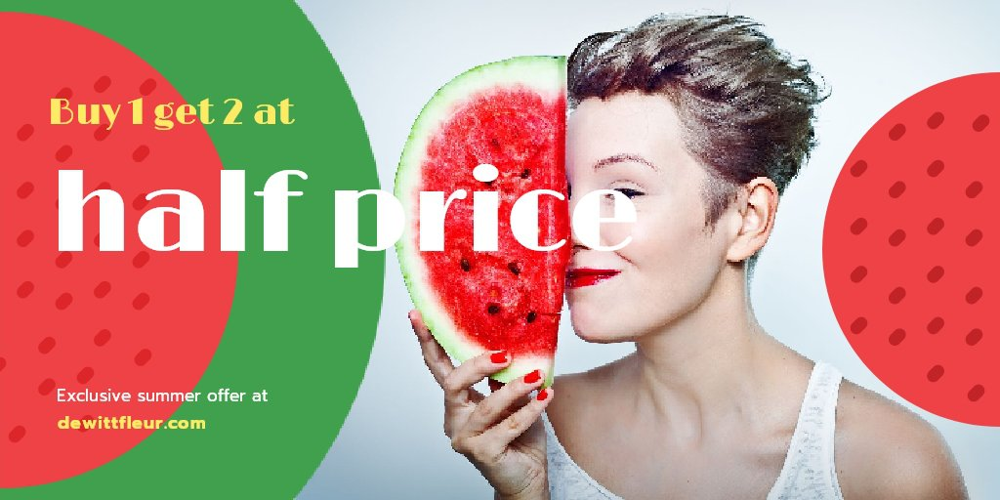
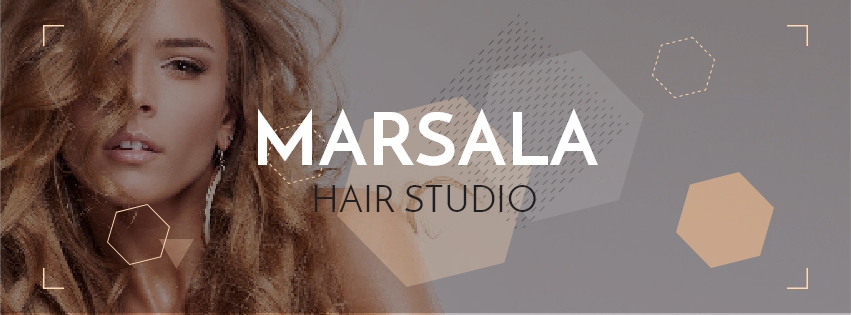
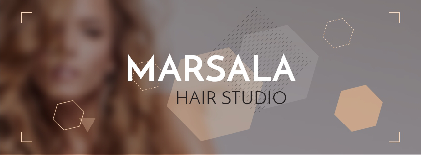

Published as a conference paper at ICLR 2026
Yan Gao4Ji Li 3Yu Qiao4Jiang Bian 2
1Peking University2Microsoft Research Asia3Microsoft4Central South University
ABSTRACT
Assessing the aesthetic quality of graphic design is central to visual communica-tion, yet remains underexplored in vision–language models (VLMs). We investi-gate whether VLMs can evaluate design aesthetics in ways comparable to humans.Prior work faces three key limitations: benchmarks restricted to narrow principlesand coarse evaluation protocols, a lack of systematic VLM comparisons, and lim-ited training data for model improvement. In this work, we introduce AesEval-Bench, a comprehensive benchmark spanning four dimensions, twelve indicators,and three fully quantifiable tasks: aesthetic judgment, region selection, and pre-cise localization. Then, we systematically evaluate proprietary, open-source, andreasoning-augmented VLMs, revealing clear performance gaps against the nu-anced demands of aesthetic assessment. Moreover, we construct a training datasetto fine-tune VLMs for this domain, leveraging human-guided VLM labeling toproduce task labels at scale and indicator-grounded reasoning to tie abstract indi-cators to concrete design regions. Together, our work establishes the first system-atic framework for aesthetic quality assessment in graphic design. Our code anddataset will be released at: https://github.com/arctanxarc/AesEval-Bench.
1INTRODUCTION
1
Published as a conference paper at ICLR 2026
With AesEval-Bench, we systematically evaluate VLMs on their ability to assess the aesthetic qual-ity of graphic designs (see Table 1). For each design, models perform three tasks across twelveindicators. We use human annotation as ground truth, and measure performance by accuracy (foraesthetic judgment and region selection) and bbox IoU (for precise localization). Overall, our resultsreveal clear gaps between current state-of-the-art VLMs and the nuanced demands of aesthetic qual-ity assessment. Specifically, proprietary VLMs (e.g., GPT series (Achiam et al., 2023)) outperformopen-source ones (e.g., Qwen-VL (Wang et al., 2024), Intern-VL (Zhu et al., 2025), LLaVA (Liuet al., 2023)). Among open-source models, larger variants (32B, 72B) generally achieve better per-formance than smaller ones (7B). Surprisingly, reasoning-augmented VLMs (e.g., GPT-o1 (Jaechet al., 2024), GPT-o3, Gemini-2.5-Pro (Comanici et al., 2025)) offer no clear advantage over theirnon-reasoning counterparts. Together, these findings expose the limitations of existing VLMs andunderscore the need for domain-specific training tailored to aesthetic quality assessment.
To sum up, our contributions are as follows:
• We introduce AesEval-Bench, a comprehensive benchmark for assessing aesthetic qualityof graphic designs spanning four dimensions, twelve indicators and three quantifiable tasks.• We systematically evaluate proprietary, open-source, and reasoning-augmented VLMs, re-vealing clear performance gaps in aesthetic quality assessment.
2
Published as a conference paper at ICLR 2026
Table 1: A comparison of AesEval-Bench with existing benchmarks for both image aesthetics anddesign aesthetics. We highlight key differences in their scale, task formats, source data, covereddesign dimensions, and the inclusion of reasoning paths.
Benchmark#DataTaskFormatSourceSource TypeDimensionTraining SetReasoning PathOpen-sourceFontLayoutGraphicsColor
FineArtBench(Jiang & Chen, 2025)-ChoiceFree-form
• We construct a training dataset to fine-tune VLMs for this domain. Our approach intro-duces human-guided VLM labeling to produce task labels at scale and indicator-groundedreasoning to tie abstract indicators to concrete design regions. Experiments on AesEval-Bench show that this dataset consistently improves performance across all tasks.
2RELATED WORKS
Despite its importance, design aesthetics assessment remains underexplored. Existing benchmarkscapture only a narrow subset of design dimensions. For instance, (Lin et al., 2024a) omits graphics-related factors, while (Haraguchi et al., 2024) ignores both fonts and graphics. Furthermore, theirtask formulations lack rigor. Some adopt free-form question answering, which is difficult to quan-tify (Lin et al., 2023), while others provide only holistic scores without identifying problematicregions, limiting interpretability and actionability (Jung et al., 2025). Our work introduces a bench-mark that comprehensively covers design-related aesthetic factors across font, layout, graphics andcolor, defining well-structured and quantifiable tasks using choice and bbox prediction formats.
Vision-Language Models. Vision-Language Models (VLMs) (Wang et al., 2024; Comanici et al.,2025; Li et al., 2024a; Zhang et al., 2025c) have achieved remarkable performance on tasks suchas image captioning (Luo et al., 2025a; Li et al., 2024b; Zhang et al., 2025d) and visual questionanswering (An et al., 2024; Lin et al., 2024b; Luo et al., 2025b). Yet, their ability to assess theaesthetic quality of graphic designs remains largely unexplored. Prior work typically evaluates onlyone or two VLMs (e.g., (Haraguchi et al., 2024) studies GPT). We provide a systematic comparisonacross a broad set of VLMs, including proprietary, open-source, and reasoning-augmented models.
Recently, increasing attention has been devoted to the reasoning capabilities of VLMs (Li et al.,2025a; Zhang et al., 2025b). For example, (Sarch et al., 2025) employs tree-based search to improvereasoning chains, (Li et al., 2025a) visualizes reasoning trajectories for transparency, and (Sun et al.,2024; Shao et al., 2024; Cao et al., 2025; Wu et al., 2025) explores grounded visual reasoning byjointly generating bounding boxes and textual explanations. In our work, we observe that genericreasoning in current VLMs provides limited benefit for assessing design aesthetics. To address this,we construct a training dataset with reasoning paths that explicitly link abstract design indicators
3

Published as a conference paper at ICLR 2026
Figure 1: Overview of AesEval-Bench. (A) The four dimensions and twelve indicators consideredin the benchmark. Numbers inside the circles indicate how many designs are labeled as flawed foreach indicator. (B) Example designs illustrating the indicators, with regions exhibiting aestheticissues highlighted by red boxes. Detailed textual explanations of all indicators are provided in theAppendix. (C) The three tasks, along with example questions and their expected answers.
to concrete regions of the design. Unlike grounded visual reasoning, which localizes semanticallysalient entities (e.g., a “dog” or “chair”), our regions are indicator-centric, capturing higher-levelconcepts such as hierarchy, alignment, and spacing that directly embody design principles.
3BENCHMARK CONSTRUCTION
3.1OVERVIEW
For design images, we sample 1200 designs from the test split of Crello dataset (Yamaguchi, 2021),which contains professional graphic designs with both the design image and its metadata. Theexpected answers differ across tasks. For aesthetic judgment, the answer is yes or no. For regionselection, it is the index of one region among four candidates. For precise localization, it is thebounding box coordinates of the identified region or None if the design has no aesthetic issues.
Overall, AesEval-Bench comprises 4500 base question–answer pairs (three tasks across 1500 de-signs), each further instantiated across twelve indicators to enable fine-grained evaluation.
3.2CURATION PIPELINE
Establishing Dimensions and Indicators. Aesthetic quality in graphic design is inherently mul-tidimensional. To define a rigorous benchmark, we first conducted a comprehensive literature re-view of classical and contemporary design principles (McCormack & Lomas, 2020; Lou et al.,2022; Lu et al., 2020). We then consulted professional designers to refine this taxonomy, ensur-
4

Published as a conference paper at ICLR 2026
Figure 2: (A) Illustration of two key steps in training data construction. Human-guided VLM label-ing enables scalable determination of whether designs exhibit aesthetic issues. Indicator-groundedreasoning generates reasoning paths that explicitly link abstract indicators to concrete design regions(represented as bbox coordinates). (B) Example highlighting the difference between non-reasoningmodels, generic reasoning models, and our indicator-grounded reasoning model.
ing alignment with both theoretical foundations and practical expertise. This process yielded fourcore dimensions—layout, font, graphics, and color (Figure 1(A))—each further specified by con-crete indicators consistently emphasized in human aesthetic judgment. In total, we distilled twelveindicators that together capture the essential factors of design aesthetics (Figure 1(B)).
Constructing Potentially Flawed Designs. As introduced in Section 3.1, the design images inAesEval-Bench are sourced from the Crello dataset, which contains professional-quality graphic de-signs. To effectively evaluate design aesthetics, the benchmark must include not only well-designedbut also less appealing examples. We therefore repurpose Crello by introducing controlled perturba-tions, such as repositioning elements, altering font choices, or adjusting colors. These perturbationsmay either degrade the visual quality or leave it largely intact. For example, slightly enlarging aheading might preserve hierarchy, whereas shifting it left could disrupt balance. Each base designundergoes one to three random perturbations, generating a spectrum of variations that range fromaesthetically unchanged to noticeably flawed, while still appearing realistic. Since Crello (Yam-aguchi, 2021) provides element-level metadata in JSON format along with separate design layers,these perturbations can be applied directly at the JSON level and rendered into new design imagesby recombining the modified metadata with the corresponding layers.
Human-in-the-Loop Aesthetic Review. We engage human annotators to verify whether the per-turbed designs truly exhibit aesthetic issues. Before annotation, all annotators receive a tutorialthat includes examples of both well-designed and flawed cases, along with detailed explanations ofthe underlying reasons. During the review, each annotator is shown a design image together witha description of the focal indicator and asked to determine whether the design contains the corre-sponding flaw (yes or no). For each design, we derive the final label by applying majority votingacross multiple annotators to ensure consensus.
Generating Question-Answer Pairs. With metadata in JSON format, records of applied perturba-tions and human annotations, we can systematically construct answers corresponding to each task.For aesthetic judgment, the rule is straightforward: if human annotators label a design as good, theground-truth answer is no (i.e., no aesthetic issue); otherwise, it is yes. For region selection, if adesign is labeled as good, the four answer choices consist of three randomly sampled bboxes fromthe metadata and a None option, with the ground-truth answer being None. If the design is labeledas flawed, the four choices include the bbox of the perturbed element, two randomly sampled bboxesfrom the metadata, and None, with the ground-truth answer set to the bbox of the perturbed element.For precise localization, if a design is labeled as good, the ground-truth answer is None; otherwise,it corresponds to the exact bbox of the perturbed element.
5
Published as a conference paper at ICLR 2026
3.3EVALUATION PROTOCOLS
For aesthetic judgment and region selection, both formulated as choice problems, we adopt accuracyas the metric, measuring the exact match between model predictions and the ground truth. Forprecise localization, the task combines two components: a choice problem (predicting None whenno aesthetic issue exists) and a bounding box regression problem (predicting the exact bbox whenan issue is present). Accordingly, we use accuracy for cases where the ground truth is None, andintersection over union (IoU)—which quantifies the overlap between the predicted and ground-truthbboxes—for cases where a bbox is required.
4TRAINING DATA CONSTRUCTION
Evaluation on popular VLMs reveals clear gap between the capabiliteis of current state-of-the-arts VLMs and the nuanced requirements of aesthetic quality assessment. Moreover, reasoning-augmented VLMs show no clear performance gains (see Section 5.1).
Human-Guided VLM Labeling. We leverage a small set of human annotations as demonstrations,together with the bbox coordinates of perturbed regions, as input to strong VLMs. The model isinstructed to generate a binary label indicating whether the perturbed design exhibits an aestheticissue (see Figure 2(A)). By incorporating human annotations, we preserve alignment with humanjudgment while substantially reducing manual annotation costs. Moreover, providing the perturba-tion region as a prior, which is unavailable in real-world scenarios, simplifies the labeling processand improves reliability. With these two sources of guidance, while the generated labels may not beperfectly accurate, they yield a training set of sufficient quality to enhance fine-tuning performance.
Indicator-Grounded Reasoning. As illustrated in Figure 2(B), generic reasoning often explainsor analyzes a given indicator and task without grounding the discussion in relevant regions of thedesign. To address this limitation, we propose explicitly linking abstract indicators to concreteregions within the design. Specifically, we include both the bounding box (bbox) coordinates ofrelevant regions and textual explanations of their relevance to the indicator in the reasoning path.
To obtain such reasoning paths, we instruct powerful VLMs (e.g., GPT in our experiments) byproviding them with the bbox coordinates of the target regions and the corresponding design layers(Figure 2(A)). The model is required to output the provided coordinates alongside an explanationof how the region relates to the indicator, thereby ensuring that the reasoning path consistentlycontains the desired information. We further adopt task-specific strategies to determine the regionsof interest. For aesthetic judgment, we directly use the bbox of the perturbed regions. For regionselection, we include both the perturbed and non-perturbed regions to strengthen the model’s abilityto discriminate among candidate regions. For precise localization, we not only highlight the bbox ofperturbed regions but also emphasize their relationship to the overall design, enabling the model tobetter localize problematic regions within the global design context.
5EXPERIMENT
5.1BENCHMARKING VLMS ON AESEVAL-BENCH
Setups. We conduct a comprehensive evaluation of 10 VLMs spanning diverse model familiesand parameter scales. For non-reasoning models, we consider open-source representatives such asLLaVA (Liu et al., 2023), Qwen2.5-VL (Bai et al., 2025), and Intern-VL3 (Zhu et al., 2025), as wellas closed-source GPT models (Jaech et al., 2024). For reasoning-augmented models, we evaluate
6
Published as a conference paper at ICLR 2026
Table 2: Evaluation on aesthetic judgment task. Overall acc is the average value of all indicators.The best and second-best results are highlighted in bold and underlined, respectively.
ModelOverall AccLayoutColorFontGraphics
balancelayeringwhitespacealignmentharmonycontrastappealpsycholoylegibilityhierarchyqualityrelevance
Non-reasoning Models
LLaVA-13B0.56360.65060.50630.69750.67590.44110.24090.26150.28510.76600.82600.73860.6733Qwen-VL-7B0.63900.82720.45080.80760.84130.82230.91360.40090.13550.94300.31000.81830.3970Qwen-VL-32B0.64580.67620.56890.68620.69410.62090.57760.49480.18620.80230.76180.77080.9001Qwen-VL-72B0.67240.67520.69250.71310.67310.69210.78040.26200.24470.87390.79520.77290.8734Intern-VL3-8B0.63310.46170.64520.75770.77510.34870.33290.30820.51800.94860.69510.85710.9491Intern-VL3-14B0.68830.74060.38260.75630.76010.77060.85940.52760.19120.83090.83040.83730.7729GPT-4o0.70310.75880.67890.65970.46880.81290.81900.82370.32920.75060.73440.78570.8160GPT-50.72520.83780.78320.72750.65100.69530.83750.40000.52370.74720.74190.90230.8551
Reasoning-augmented Models
GPT-o10.67050.73840.75310.55220.33980.71490.54390.74270.67500.70490.72660.75180.8030GPT-o30.71050.74500.75970.65880.39640.77150.70050.79930.63160.76150.73320.80840.7596Gemini-2.5-Pro0.63680.73550.69240.59360.50890.73330.64950.67760.56040.58880.69970.52170.6803
Expert Models for Image Aesthetics Assessment
AesExpert-7B0.40560.50250.41420.33170.46360.30170.41470.32530.23180.26700.50730.61660.4904UNIAA-LLaVA0.29000.23930.21200.24710.22070.27330.33160.30410.30730.28930.52660.24100.2879
Table 3: Evaluation on region selection task. Overall acc is the average value of all indicators. Thebest and second-best results are highlighted in bold and underlined, respectively.
ModelOverall AccLayoutColorFontGraphics
balancelayeringwhitespacealignmentharmonycontrastappealpsycholoylegibilityhierarchyqualityrelevance
Non-reasoning Models
LLaVA-13B0.60650.58230.57130.56120.59180.61710.51660.63190.68560.61300.70030.63290.5745Qwen-VL-7B (Base)0.57950.51280.53700.57480.54430.58220.54330.54120.63840.59740.63790.62580.6190Qwen-VL-32B0.63110.59330.53970.50120.52520.56780.70650.63670.57350.78330.62780.76500.7533Qwen-VL-72B0.66260.51050.58390.45470.53480.59770.72250.64950.79400.77280.79340.73600.8015Intern-VL3-8B0.57990.52420.49480.56060.53630.55270.55680.58050.63420.65830.61570.60310.6415Intern-VL3-14B0.63780.58720.52040.59450.57450.62820.69970.64190.70340.72440.68700.61090.6818GPT-4o0.67450.47140.48940.50070.60110.74060.85910.71660.81350.66330.90800.64440.6865GPT-50.69890.64840.59290.66300.63960.72290.72140.75100.68470.80380.75650.69530.7070
Reasoning-augmented Models
GPT-o10.63470.63190.57460.63970.59340.61780.63230.68800.77340.63200.70920.59360.5305GPT-o30.65810.64830.62630.53250.36530.82720.54860.71130.79810.65860.77440.66010.7466Gemini-2.5-Pro0.61000.68100.69810.60960.29920.60500.65380.66780.60500.61640.65390.56960.6605
Expert Models for Image Aesthetics Assessment
AesExpert-7b0.28830.29540.22800.31740.26310.34260.26460.31760.31760.31760.25880.27650.2602UNIAA-LLaVA0.24180.16190.29150.15520.40750.17000.15160.17600.24790.27770.37960.28610.1968
GPT-o1, GPT-o3, and Gemini-2.5-Pro (Comanici et al., 2025). In addition, we include expert modelsspecifically designed for image aesthetic assessment, namely AesExpert (Huang et al., 2024) andUNIAA-LLAVA (Zhou et al., 2024). All models are evaluated under the same input setting, whichconsists of a question (see Figure 1), a design image, and metadata in JSON format.
Results. The performance of VLMs are evaluated following the protocols introduced in Section 3.3.Specifically, in addition to reporting scores for each individual indicator, we also provide an overallscore computed as the average across all indicators.
7
Published as a conference paper at ICLR 2026
Table 4: Evaluation on precise localization task for the choice component where the model shouldpredict None if no aesthetic issues are present. Overall score is the average accuracy of all indicators.The best and second-best results are highlighted in bold and underlined, respectively.
ModelOverall ScoreLayoutColorFontGraphics
balancelayeringwhitespacealignmentharmonycontrastappealpsycholoylegibilityhierarchyqualityrelevance
Non-reasoning Models
LLaVA-13B0.44550.45230.61300.56990.47140.33560.37230.28980.24740.73010.24530.56110.4573Qwen-VL-7B0.51920.51040.58390.45460.53470.43760.56250.54950.53390.45280.53340.53600.5415GPT-4o0.56800.64170.20630.59540.16790.86260.63720.72000.67130.45940.51640.77620.5618GPT-50.60900.63060.61420.69100.62470.60570.61700.56430.59890.54640.61340.62170.5804
Reasoning-augmented Models
GPT-o10.52950.46280.48700.52480.49430.53220.49330.49120.58840.54740.58790.62580.5190GPT-o30.58000.59220.38680.53690.65700.75540.65950.60110.69850.73960.39520.53110.4063Gemini-2.5-Pro0.60470.63190.57460.53970.59340.61780.63230.68800.77340.53200.70920.43360.5305
Expert Models for Image Aesthetics Assessment
AesExpert-7b0.33770.32290.31460.37560.31720.42760.35820.31460.32670.33140.38030.30250.2804
Table 5: Evaluation on precise localization task for the bbox prediction component where the modelshould output coordinates of the aesthetic issues. Overall score is the average IoU of all indicators.The best and second-best results are highlighted in bold and underlined, respectively.
ModelOverall ScoreLayoutColorFontGraphics
balancelayeringwhitespacealignmentharmonycontrastappealpsycholoylegibilityhierarchyqualityrelevance
Non-reasoning Models
LLaVA-13B0.05590.06530.00800.03020.01720.10240.07920.04270.03030.01880.01020.15100.1160Qwen-VL-7B (Base)0.05140.00670.16690.01010.02590.01090.00360.00390.23060.00120.04520.09940.0063GPT-4o0.17120.18220.29740.13990.25520.08830.13530.06640.21860.21440.05860.27070.1270GPT-50.19930.18660.15460.20770.16130.18290.15250.15290.33480.17450.18350.26670.2338
Reasoning-augmented Models
O10.12860.09070.07670.14120.12260.17190.02040.15460.12360.14400.14410.19120.1617O30.14180.06190.19150.05520.30750.07000.05160.07600.14790.17770.27960.18610.0968Gemini-2.5-Pro0.09770.05180.16200.10520.07100.07600.04870.04900.22570.09630.09030.09450.1014
Expert Models for Image Aesthetics Assessment
AesExpert-7b0.03270.04400.02030.00930.10840.08610.00630.00490.01180.00010.03480.06010.0067
5.2FINE-TUNING VLMS WITH AESEVAL-TRAIN
Setups. We construct the training set following the pipeline described in Section 4, resulting in 30kquestion–answer pairs. In our experiments, we use Qwen2.5-VL-7B-Instruct (Bai et al., 2025) as arepresentative model and adopt full-parameter finetuning on the constructed dataset. The learningrate is set to 1e-6, with a cosine scheduler and a 3% warmup ratio. For computational efficiency,
8
Published as a conference paper at ICLR 2026
Balance
Layering
Whitespace
Alignment
Harmony
ContrastAppeal
Psychology
Legibility
Hierarchy
Quality
Relevance
0.0
0.2
0.4
0.6
0.8
1.0
0.7423
0.6624
0.6432
0.4523
0.7964
0.8025
0.8072
0.31270.7342
0.7179
0.7692
0.7995
Full Model (Baseline)Without ImagesWithout ExplanationsWithout Metainfo
Balance
Layering
Whitespace
Alignment
Harmony
Contrast
Appeal
Psychology
Legibility
Hierarchy
Quality
Relevance
0.0
0.2
0.4
0.6
0.8
1.0
0.43320.4512
0.4625
0.5629
0.7024
0.82090.67840.7753
0.6251
0.8698
0.6062
0.6483
Full Model (GPT-4o)Without ImagesWithout ExplanationsWithout Metainfo
Balance
Layering
Whitespace
Alignment
Harmony
Contrast
Appeal
Psychology
Legibility
Hierarchy
Quality
Relevance
0.0
0.20.1737
0.2889
0.1314
0.2467
0.0798
0.1268
0.0579
0.2101
0.2059
0.0501
0.26220.1185
Full Model (GPT-4o)Without ImagesWithout ExplanationsWithout Metainfo
Figure 3: Results for model variants using different input components.
Table 6: Results and ablation study of fine-tuning VLMs using our constructed training set.
Model SettingOverall ScoreOverall GainOverall RankLayoutColorFontGraphics
balancelayeringwhitespacealignmentharmonycontrastappealpsycholoylegibilityhierarchyqualityrelevance
Aesthetic Judgment (Accuracy)
Qwen-VL-7B (Base)0.6390-90.82720.45080.80760.84130.82230.91360.40090.13550.94300.31000.81830.3970+ AesEval-Train0.6987+ 5.97%40.71230.67890.72150.68680.70310.66540.73290.65770.74360.64820.70960.7244- Reasoning Path0.6576--0.65110.65890.64130.66870.63090.67910.62070.68930.61150.69850.65080.6904- Positive Samples0.2072--0.21010.19990.22020.18930.20580.21470.19550.22460.18550.22960.20040.2108
Region Selection (Accuracy)
Qwen-VL-7B (Base)0.5795-100.51280.53700.57480.54430.58220.54330.54120.63840.59740.63790.62580.6190+ AesEval-Train0.6065+ 2.70%80.58270.61080.59630.62890.57140.62360.65410.64120.63890.64870.58990.5915- Reasoning Path0.5795--0.57320.52790.56970.53220.57410.53220.53410.62830.59530.63180.66670.5885- Positive Samples0.5327--0.50890.54110.52570.55430.50130.55870.52910.57090.52120.57880.51460.4878
Precise Localization (IoU)
Qwen-VL-7B (Base)0.0514-80.00670.16690.01010.02590.01090.00360.00390.23060.00120.04520.09940.0063+ AesEval-Train0.2231+ 17.17%10.25180.19820.31030.08570.22040.28460.15520.39010.06070.23130.11520.2745- Reasoning Path0.0782--0.15230.02110.19870.00950.07500.12040.03480.08120.01590.05550.06010.1139- Positive Samples0.0641--0.18660.15460.20770.16130.18290.15250.15290.33480.17450.18350.26670.2338
training is performed with bfloat16 mixed precision and FlashAttention-2 (Dao et al., 2022). Thevision encoder is kept frozen, while the language model parameters are tuned.
6CONCLUSION
In this work, we introduce AesEval-Bench for design aesthetics assessment, which spans four di-mensions, twelve indicators and three quantifiable tasks. Based on it, we systematically evaluateproprietary, open-source and reasoning-augmented VLMs, revealing clear gaps in design aesthet-ics assessment. Furthermore, we construct a training dataset to fine-tune VLMs for this domain.Experiments show that this dataset significantly improves model performance across all tasks.
Limitations. First, as Crello serves as the source dataset, the benchmark does not cover all typesof graphic design, such as infographics or mobile UIs. Second, a fully disentangled taxonomy forindicators is not yet available. Should a more rigorously disentangled taxonomy be proposed inthe future, it would be valuable to adopt it and update our indicators accordingly. Third, highly
9
Published as a conference paper at ICLR 2026
subjective aspects of design, such as creativity, are not included. Finally, leveraging reinforcementlearning to further enhance reasoning capabilities is left for future exploration.
REFERENCES
Josh Achiam, Steven Adler, Sandhini Agarwal, Lama Ahmad, Ilge Akkaya, Florencia Leoni Ale-
Ruichuan An, Sihan Yang, Ming Lu, Renrui Zhang, Kai Zeng, Yulin Luo, Jiajun Cao, Hao Liang,
Ruichuan An, Sihan Yang, Ziyu Guo, Wei Dai, Zijun Shen, Haodong Li, Renrui Zhang, Xinyu Wei,
Shuai Bai, Keqin Chen, Xuejing Liu, Jialin Wang, Wenbin Ge, Sibo Song, Kai Dang, Peng Wang,
Gheorghe Comanici, Eric Bieber, Mike Schaekermann, Ice Pasupat, Noveen Sachdeva, Inderjit
Tri Dao, Dan Fu, Stefano Ermon, Atri Rudra, and Christopher R´e. Flashattention: Fast and memory-
Yubin Deng, Chen Change Loy, and Xiaoou Tang. Image aesthetic assessment: An experimental
Ziyu Guo, Xinyan Chen, Renrui Zhang, Ruichuan An, Yu Qi, Dongzhi Jiang, Xiangtai Li, Manyuan
Daichi Haraguchi, Naoto Inoue, Wataru Shimoda, Hayato Mitani, Seiichi Uchida, and Kota Yam-
Yipo Huang, Quan Yuan, Xiangfei Sheng, Zhichao Yang, Haoning Wu, Pengfei Chen, Yuzhe Yang,
Aaron Hurst, Adam Lerer, Adam P Goucher, Adam Perelman, Aditya Ramesh, Aidan Clark, AJ Os-
Aaron Jaech, Adam Kalai, Adam Lerer, Adam Richardson, Ahmed El-Kishky, Aiden Low, Alec
Ruixiang Jiang and Changwen Chen. Multimodal llms can reason about aesthetics in zero-shot.
Sam Jung, Agustin Garcinuno, and Spencer Mateega. Ui-bench: A benchmark for evaluating design
10
Published as a conference paper at ICLR 2026
Hyolim Kang, Yunsu Park, Youngbeom Yoo, Yeeun Choi, and Seon Joo Kim. Open-ended hierarchi-
Bo Li, Yuanhan Zhang, Dong Guo, Renrui Zhang, Feng Li, Hao Zhang, Kaichen Zhang, Peiyuan
Chengzu Li, Wenshan Wu, Huanyu Zhang, Yan Xia, Shaoguang Mao, Li Dong, Ivan Vuli´c, and
Jian Li, Weiheng Lu, Hao Fei, Meng Luo, Ming Dai, Min Xia, Yizhang Jin, Zhenye Gan, Ding Qi,
Junxian Li, Di Zhang, Xunzhi Wang, Zeying Hao, Jingdi Lei, Qian Tan, Cai Zhou, Wei Liu, Yaotian
Jieru Lin, Danqing Huang, Tiejun Zhao, Dechen Zhan, and Chin-Yew Lin. Designprobe: A graphic
Kevin Lin, Zhengyuan Yang, Linjie Li, Jianfeng Wang, and Lijuan Wang. Designbench: Exploring
Weifeng Lin, Xinyu Wei, Ruichuan An, Peng Gao, Bocheng Zou, Yulin Luo, Siyuan Huang, Shang-
Weifeng Lin, Xinyu Wei, Ruichuan An, Tianhe Ren, Tingwei Chen, Renrui Zhang, Ziyu Guo, Wen-
Yun Lou, Weiyue Gao, Pei Chen, Xuanhui Liu, Changyuan Yang, and Lingyun Sun. Designeva: A
Meng Luo, Hao Fei, Bobo Li, Shengqiong Wu, Qian Liu, Soujanya Poria, Erik Cambria, Mong-
Meng Luo, Shengqiong Wu, Liqiang Jing, Tianjie Ju, Li Zheng, Jinxiang Lai, Tianlong Wu, Xinya
Du, Jian Li, Siyuan Yan, Jiebo Luo, William Yang Wang, Hao Fei, Mong-Li Lee, and Wynne Hsu.Dr.v: A hierarchical perception-temporal-cognition framework to diagnose video hallucination byfine-grained spatial-temporal grounding, 2025a. URL https://arxiv.org/abs/2509.11866.
Meng Luo, Shengqiong Wu, Liqiang Jing, Tianjie Ju, Li Zheng, Jinxiang Lai, Tianlong Wu, Xinya
11
Published as a conference paper at ICLR 2026
Jon McCormack and Andy Lomas. Understanding aesthetic evaluation using deep learning. In
Joonhyung Park, Peng Tang, Sagnik Das, Srikar Appalaraju, Kunwar Yashraj Singh, R Manmatha,
Gabriel Sarch, Snigdha Saha, Naitik Khandelwal, Ayush Jain, Michael J Tarr, Aviral Kumar, and
Hao Shao, Shengju Qian, Han Xiao, Guanglu Song, Zhuofan Zong, Letian Wang, Yu Liu, and Hong-
Kunal Singh, Shreyas Singh, and Mukund Khanna. Trishul: Towards region identification and screen
Guangyan Sun, Mingyu Jin, Zhenting Wang, Cheng-Long Wang, Siqi Ma, Qifan Wang, Tong Geng,
Peng Wang, Shuai Bai, Sinan Tan, Shijie Wang, Zhihao Fan, Jinze Bai, Keqin Chen, Xuejing Liu,
Chatchai Wangwiwattana and Areerat Meeyen. Design through ai eyes: Automating aesthetic as-
Qiong Wu, Xiangcong Yang, Yiyi Zhou, Chenxin Fang, Baiyang Song, Xiaoshuai Sun, and Ron-
An Yang, Anfeng Li, Baosong Yang, Beichen Zhang, Binyuan Hui, Bo Zheng, Bowen Yu,
Di Zhang, Jingdi Lei, Junxian Li, Xunzhi Wang, Yujie Liu, Zonglin Yang, Jiatong Li, Weida Wang,
Huanyu Zhang, Chengzu Li, Wenshan Wu, Shaoguang Mao, Yifan Zhang, Haochen Tian, Ivan
Huanyu Zhang, Wenshan Wu, Chengzu Li, Ning Shang, Yan Xia, Yangyu Huang, Yifan Zhang,
Qintong Zhang, Bin Wang, Victor Shea-Jay Huang, Junyuan Zhang, Zhengren Wang, Hao Liang,
12
Published as a conference paper at ICLR 2026
YiFan Zhang, Huanyu Zhang, Haochen Tian, Chaoyou Fu, Shuangqing Zhang, Junfei Wu, Feng Li,
Ming Zhong, Yuanlei Wang, Liuzhou Zhang, Arctanx An, Renrui Zhang, Hao Liang, Ming Lu,
Zhaokun Zhou, Qiulin Wang, Bin Lin, Yiwei Su, Rui Chen, Xin Tao, Amin Zheng, Li Yuan, Pengfei
Jinguo Zhu, Weiyun Wang, Zhe Chen, Zhaoyang Liu, Shenglong Ye, Lixin Gu, Hao Tian, Yuchen
13
Published as a conference paper at ICLR 2026
Dimension-Indicators Prompts:
Graphic-Quality: Resolution is a measure of image detail. Appropriate resolution ensuresthe best picture quality and readability. Does element have quality issue?Graphic-Relevance: Relevance refers to the direct connection between a graphic elementand the meaning it conveys. Does element have relevance issue?
Color-Harmony: Color Harmony refers to the overall coordination, pleasure and beautyof the entire color when there are two or more colors in an image.Color-Contrast: Color contrast refers to the contrasts, oppositions, and differences existingamong various colors.Color-Appreal: Color appeal refers to the fact that the selection and combination of colorscan attract the attention of the audience.Color-Psychology: Color psychology refers to the idea that color can trigger subjectivepsychological experiences and influence emotions, feelings, and behaviors.
Layout-Balance: Balance is the distribution of visual weight in design. It can be sym-metrical (with equal weights on both sides) or asymmetrical (with unequal weights but stillachieving visual balance).Layout-Layering: Use size, color, contrast, and other visual cues to establish a hierarchicalstructure of design elements to guide the audience’s eyes.Layout-Whitespace: White space refers to the blank area around the elements in a design.Effective utilization of white space can create balance, visual hierarchy, and clarity.Layout-Alignment: Alignment refers to the arrangement of design elements relativeto each other or a specific axis or grid. Proper alignment creates a sense of order andorganization, making the design easier to understand and navigate.
Font-Hierarchy: The presentation of the font has a hierarchical structure, so users can scanthe text to obtain key information.Font-Legibility: Legibility refers to the recognition of individual characters and the rela-tionships between them when they are arranged side by side.
Table 7: Showcase of descriptions of each indicator.
Task Reasoning Instructions:
Aesthetic Judgment : Given the preview image and the element image and elementbounding box bbox, please reason why the element is not aesthetic in the aspect of criteria.Your reason should only contain the analysis about criteria.Please think and reasoning.Once the element is mentioned, you should add its bounding box after the element(onlybounding box).
Region Selection: Given a preview image, an image of an unsightly element and itsbounding box bbox[0], and an image of an attractive element and its bounding box bbox[1],analyze why the first element is unsightly in terms of criteria based on the relationshipbetween the elements. Your reasoning should only include an analysis of criteria. Pleasethink and reason. Once an element is mentioned, you should add its bounding box after theelement (bounding box only).
Precise Localization: Given a preview image, an element image, and the element’s bound-ing box bbox, analyze why the element is unsightly when viewed from the perspective ofcriteria, based on their relationship. Your reasoning should only include analysis of criteria.Think and reason. Once you mention the element, you should follow it with its boundingbox (only the bounding box).
Table 8: Showcase of task reasoning instructions.
14
Published as a conference paper at ICLR 2026
ASTATEMENT OF LLM USAGE
Large language models (LLMs) were consulted for technical guidance during implementation anddebugging; following the collaborative drafting of the manuscript, we further employed LLMs torefine the prose and enhance the overall exposition.
BPROMPTS AND INSTRUCTIONS
First, Dimension-Indicator Prompts establish a clear set of evaluation criteria. These are organizedinto four core dimensions: Graphics, Color, Layout, and Font, each containing specific indicatorslike Font-Legibility. As shown in Table 7, every indicator is defined and paired with a guidingquestion to standardize the analysis.
Second, Task Reasoning Instructions (Table 8) provide operational guidance for creating the rea-soning paths. They direct the analysis to focus on an element’s intrinsic flaws, its relationship withother elements, or its immediate context, while critically mandating the inclusion of the element’sbounding box (bbox) to ground the reasoning in precise spatial evidence.
CADDITIONAL RELATED WORK
Evaluation for VLMs. Recent years have witnessed a surge in benchmarks (Li et al., 2024b) de-signed to evaluate Vision-Language Models (VLMs), ranging from general-purpose assessments ofperception (Luo et al., 2024) and reasoning (Guo et al., 2025; Zhang et al., 2025a), which encom-pass region-level (Lin et al., 2024b; 2025; Park et al., 2025) and hierarchical understanding (Kanget al., 2025; Singh et al., 2025; Zhong et al., 2025), to more specialized evaluations in domainslike chemistry (Li et al., 2025b) or image generation (An et al., 2026). While existing benchmarkseffectively evaluate general capability, they often overlook the nuanced, subjective dimensions ofvisual understanding. To address this, our work introduces a specialized benchmark focused on theaesthetic dimension, assessing how VLMs interpret artistic quality and visual appeal.
DDATA SOURCE SHOWCASE
To address the concern regarding the diversity of the Crello dataset, we provide a visual samplingof its typical data in Fig.4. As illustrated, the dataset covers a comprehensive range of designcategories and aesthetics, including textual handwritten, photography-driven and diverse art stylesdesigns. This diversity ensures that our benchmark evaluates models on a realistic distribution ofgraphic design tasks, preventing bias toward any single visual style.
EFLAW INJECTION PIPELINE
FREAL WORLD DESIGN DATA SHOWCASE
To validate our model’s generalization capabilities beyond the synthetic distributions of Crello, wecompiled a distinct Out-Of-Distribution (OOD) test set consisting of real-world flawed designs. Asshown in Fig. 5, these samples were sourced directly from intermediate design drafts and annotatedby professional designers, capturing the nuanced and often complex nature of authentic.
Mapping Real-World Flaws to Synthetic Perturbations. To further validate the design of our dataconstruction pipeline, we analyzed the collected real-world flawed designs (Figure 5) and mappedtheir defects to the operations in Algorithm 1. As observed in the ”Startup Job Fair” poster, thetext blends into the dark background, rendering it illegible. This specific error is simulated in our
15

Published as a conference paper at ICLR 2026
Figure 4: Diverse design samples sourced from the Crello dataset. The collection demonstratesa wide spectrum of visual styles and structural layouts, including (a) minimalist typography-centricdesigns (e.g., ”Corporate Charity”), (b) photography-driven fashion editorials featuring real humansubjects, (c) vintage illustrations, (d) photorealistic tech mockups, (e) geometric abstract art, (f)textured artistic typography, and (g) cyberpunk-themed certificates. This visual evidence refutes theconcern of stylistic homogeneity, confirming the dataset’s robust coverage across design domains.
pipeline by Color Perturbation module. Similarly, the ”End Violence” poster exhibits severe layer-ing issues where graphical elements obstruct critical text. This type of flaw is effectively reproducedby our Layout Perturbation module, which applies random coordinate shifts (Position Shift) to el-ements, creating unintended overlaps and layout collisions. This structural alignment confirms thatour synthetic pipeline generates meaningful negatives align with the real world flaw designs.
Note on Dataset Diversity and Benchmark Showcase. It is important to note that for the Bench-mark Showcase (Sec. I), we intentionally selected examples with isolated and obvious flaws. Thisselection strategy was adopted strictly for pedagogical purposes—to provide clear, unambiguous vi-sualizations of each specific aesthetic indicator (e.g., illustrating exactly what a ”Balance” violationlooks like in isolation). Readers should be aware that the full AesEval-Bench and AesEval-Traindatasets are significantly more diverse and challenging. They encompass a wide spectrum of diffi-culty, ranging from the clear, single-flaw examples shown in the showcase to complex, multi-flawdesigns (similar to the real-world examples in Fig. 5) where multiple indicators (e.g., Alignment,Legibility, and Color Harmony) may be compromised simultaneously.
GTASK-SPECIFIC PROMPT SHOWCASES.
To ensure a rigorous evaluation of reasoning-augmented models (e.g., GPT-o1, GPT-o3), we alsoformulated a specific set of Optimized Prompts designed to elicit their chain-of-thought capabilities.As detailed in Tab 9, distinct from the direct queries used for standard VLMs (”Original Prompt”),these optimized prompts explicitly instruct the model to engage in a step-by-step analytical pro-cess. However, even task-specifically designed prompts could not improve the model’s aestheticunderstanding capability, revealing the limitations of general reasoning in this task.
HSTATISTICS TESTS
We conducted rigorous hypothesis testing to ensure the reliability of our results reported in Table 6.
16
Published as a conference paper at ICLR 2026
Algorithm 1 Data Construction Pipeline via Synthetic Perturbation
IBENCHMARK SHOWCASE
In this section, we provide visual examples to better illustrate the evaluation criteria for the variousaesthetic dimensions within the AesEval-Benchmark. As shown in Table 10, Table 14, Table 17,Table 15, Table 13, Table 12 and Table 16, each showcase presents a side-by-side comparison ofdesigns that exemplify positive and negative attributes for a specific criterion. These examples serveto clarify the standards used for judging aspects such as layout alignment, color harmony, graphicquality, and font legibility, offering a tangible guide to our benchmark’s methodology.
17

Published as a conference paper at ICLR 2026
Figure 5: Representative samples from real-world flawed cases collected by professional designers.Unlike the synthetically perturbed benchmark, these designs were curated by professional designersto represent authentic aesthetic defects encountered in real-world workflows. The samples exhibitflaws such as (a) visual clutter and inconsistent orientation (e.g., ”World AIDS Day”), (b) spatialimbalance and disconnected elements (e.g., ”Startup Job Fair”), (c) grid-based alignment errors (e.g.,”School Magazine”), and (d) typographic obstruction (e.g., ”End Violence”). This dataset serves as arigorous Out-Of-Distribution benchmark to evaluate model generalization beyond synthetic patterns.
TaskOriginal PromptOptimized Prompt
AestheticJudgment
$Indicators$ + Answer it with oneword ‘yes’ or ‘no’.
Analyze the design based on$Indicators$. Evaluate the visualelements step-by-step to determine ifthey meet the standard. Then answerwith one word ‘yes’ or ‘no’.
RegionSelection
$Indicators$ + Please only provide theindex of Not aesthetic element in givenbbox choices. A. [] B.[] C.[] D.[].
Examine the candidate regions (A, B,C, D) regarding $Indicators$. Reasonthrough the visual details to identifywhich specific region exhibits the flaw.Then output the index of that element.
PreciseLocalization
$Indicators$ + Please only providebounding box of the Not aestheticelement... If there is no any problems,please return ‘None’.
Analyze the entire design to pinpointany element that violates $Indicators$.If a flaw is found, step-by-stepdetermine its exact spatial coordinates.Output the bounding box in ... format,or return ‘None’.
Table 9: Comparison of Original Prompts vs. Optimized Prompts for Reasoning Models.
18



Published as a conference paper at ICLR 2026
Benchmark Showcase
Explanation: Clear background, center-aligned text.The background is blurry and the words in the middleare not aligned.
Table 10: Examples of Layout-Alignment and Graphic-Quality in AesEval-Benchmark.
Benchmark Showcase
Explanation: The yellow font in the lower left corner
is clearly visible.
The yellow text in the lower left corner becomesblurred and invisible.
Table 11: Examples of Font-Legbility in AesEval-Benchmark.
Benchmark Showcase
Explanation: The background is a woman wearing a
mask, which is relevant.
The background is a beautiful landscape photo, whichdoes not fit the theme.
Table 12: Examples of Graphic-Relevance in AesEval-Benchmark.
19
Published as a conference paper at ICLR 2026
Benchmark Showcase
Explanation: The text is in the blank space , with no
blank space or overlap.
The text has been moved to the animal’s feet, resultingin white space below and stacked elements.
Table 13: Examples of Layout-Whitespace and Layout-Layering in AesEval-Benchmark.
Benchmark Showcase
Explanation: The overall layout of the picture is bal-
anced and coordinated.
The background of the picture is moved upwards, andthe balance of the whole picture is broken.
Table 14: Examples of Layout-Balance in AesEval-Benchmark.
Benchmark Showcase
Explanation: All the fonts in the picture are consis-
tent, which gives a sense of hierarchy.
The font in the picture is disturbed and looks like it isnot on the same level as the previous font. There is nosense of hierarchy.
Table 15: Examples of Layout-Hierarchy in AesEval-Benchmark.
20
Published as a conference paper at ICLR 2026
Benchmark Showcase
Explanation: Clear background, black and white col-
ors have good contrast.
The background is blurred and the color changes fromwhite to black, with no contrast to the background.
Table 16: Examples of Graphic-Quality and Color-Contrast in AesEval-Benchmark.
Benchmark Showcase
Explanation: The whole picture has harmonious and
beautiful colors.
The middle element turns green, which makes thewhole picture look disharmonious and unappealing.Green is strange and cause bad psychological effects.
Table 17:Examples of Color-Harmony, Color-Appealing and Color-Psychology in AesEval-Benchmark.
21